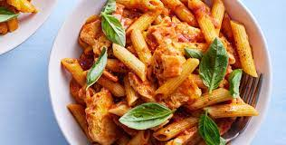

2. Mix the flour, yeast, salt and sugar together in a mixing bowl. Make a well in the centre and add the oil, then add about 225ml water to bring together as a dough. Tip out onto a floured surface and knead for 1 minute, just until smooth. Leave to rest under the upturned bowl while you prepare your pizza toppings.
3. It’s time to shape the pizzas! Roll out one ball at a time on a lightly floured surface, to about 25cm in diameter. Sprinkle a large square of baking paper with the cornmeal (or alternative) then lift the dough onto the paper. Stretch and press the pizza dough with your fingertips until it is about 30cm diameter, indenting a thicker crust around the edges. The middle should be about 5mm, and the crust about 1cm deep. Repeat to make a second pizza.
4. Spread the pizzas with sauce and add your toppings (don’t add too many, or you’ll end up with a soggy pizza). Drizzle with a little oil and leave to rest for 10-15 minutes before baking, so that the dough starts to rise. Slide the pizzas onto the preheated pizza stones or hot baking trays, still on the lining paper to help lift them easily. Bake for 10-15 minutes until the base is golden and crisp.
Mamma Mia!!!!!
Melt the butter in a pan over a medium-low heat and fry the garlic for 1 min until softened but not browned. Stir in the cream and mixed herbs, and bring the cream to a gentle simmer, lowering the temperature if necessary. Add the parmesan, stirring continuously until it has melted. Sprinkle over the parsley (you can reserve a little to garnish, if you like). Fold into the cooked pasta and serve.

2.Beat egg yolks and sugar until frothy in a large bowl. Gradually pour the warm milk into egg yolks and sugar, whisking constantly. Return mixture to saucepan; cook over medium heat, stirring with a wooden spoon until the mixture gels slightly and coats the back of the spoon. If small egg lumps begin to show, remove from heat immediately.
3.Pour the mixture through a sieve or fine strainer into a bowl. Cover, and chill for several hours or overnight.
4. Pour the mixture into an ice cream maker, and freeze according to the manufacturer's instructions. Transfer to a sealed container, and freeze until firm. If the gelato is too firm, place it in the refrigerator until it reaches the desired consistency.